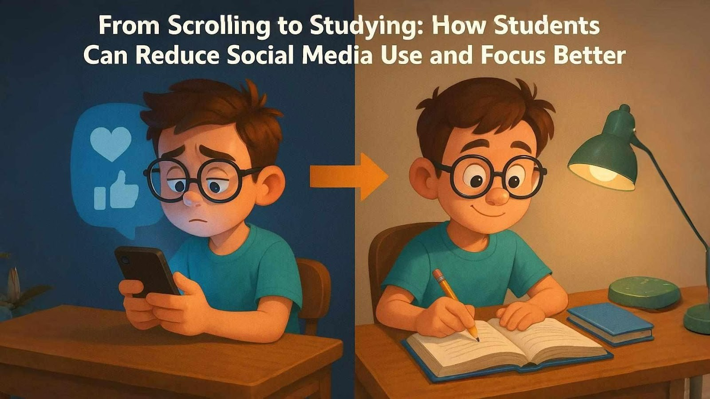
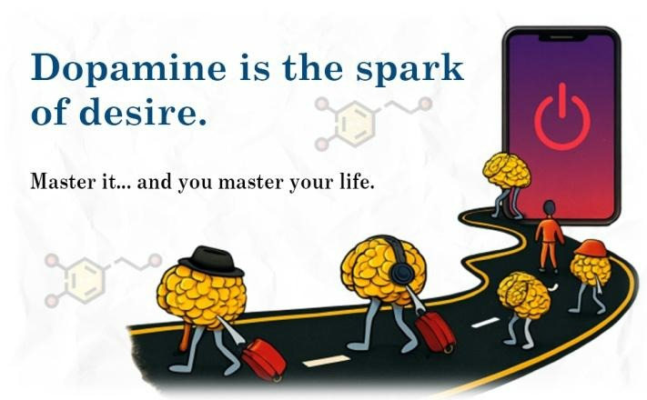
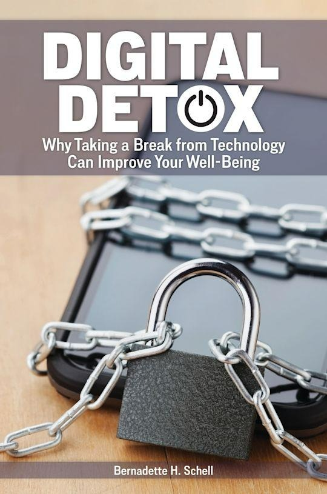
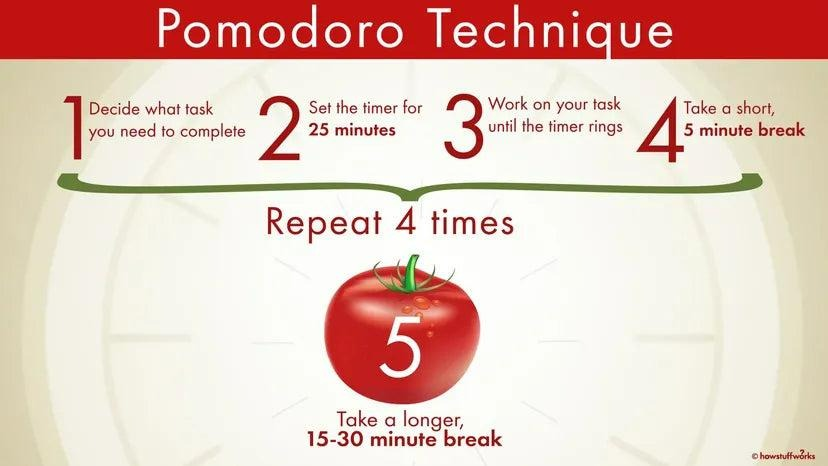

Scrolling Vs Studying: A Short Guide to Dopamine Detox

You might be familiar with your own Sundays. Sundays, for me, follow a predictable pattern. I want to do a lot of productive family work. Yet, inevitably, I slide into doom-scrolling and binge-watching. This leaves me desperate and dreading Monday's return.
Not just Sundays — some weekdays are like that too. I wonder how kids of the current generation manage this. They have a steady pressure of studies, scores, and expectations. I started reading about how our brain works.
Let's talk about our brain. Specifically, what happens inside it — when we're glued to our phone, versus when we're trying to do productive school or home work. It's like two completely different worlds, and understanding this is the actual solution for stress and burnout.
The Scroll Trap: Why Your Phone Feels Like Candy (But Isn't)

Imagine our brain having a little reward button. Every time something fun or exciting happens, a chemical messenger called dopamine gives that button a press. Brain says, "Ahh, that feels good!" Scrolling through Instagram, YouTube reels, Snapchat, or even endless news feeds? That's like hitting the dopamine button constantly.
- New notification? Ding! Dopamine hit.
- Funny meme? Ding! Dopamine hit.
- Friend liked your post? Ding! Dopamine hit.
- Just checking if anything new happened in the last 30 seconds? Ding! (Well, maybe... got to check!) Dopamine hit.
Your brain loves quick rewards. But here's the catch: this constant drip-feed of dopamine trains your brain to crave more, faster, and easier stimulation. It's like eating candy all day — it tastes great instantly, but it doesn't fuel your body properly and leaves you crashing. Not just that, we end up in fear — Fear Of Missing Out (FOMO) — something important, but truly it is our brain that makes us feel that it is important at that time.
So this doom scrolling — feeds, posts, views, comments — that's when we get stuck. Our brain is hooked on the dopamine hits, even if the content itself is negative. It's like our brain's reward system is driving the car with the brakes cut, on a one-way no-traffic highway.
The Study Struggle: Why Focus Feels Like Climbing Everest

Now, let's see. A student sits down to study calculus, to write a history essay, or to prep for the upcoming biology exam. What does the brain do? It often throws a tantrum.
Studying isn't like scrolling. Understanding a complex concept or finishing a tough problem takes effort and time. The dopamine hit — the reward — comes later: maybe when you finally "get it," when you finish the chapter, or (much later) when you get a good grade. It's delayed gratification.
Compared to the instant flow of dopamine from the phone, studying feels slow, hard, and frankly, a bit boring. This is why it feels so incredibly difficult to start studying and stay focused.
The Perfect Storm: FOMO, Pressure, and the Zombie Scroll
High school life is challenging but not constantly rewarding. There's so much to do! Simultaneously, FOMO whispers in the ear: "What if friends are hanging out without me? What if there's a viral trend I don't know about?" So what happens?
- Stress builds up.
- Grabbing the phone for a quick escape (dopamine hit!).
- Get sucked into doom scrolling (zombie mode activated).
- Time vanishes, productivity plummets.
- The unfinished work causes even more stress (and maybe guilt).
- Repeat. (Feeling exhausted and overwhelmed.)
Secret Weapon: The Dopamine Detox (It's Not Scary!)

A "dopamine detox" sounds intense — like giving up everything fun forever. Relax. It's about hitting the reset button on your brain's reward system. It's about retraining your brain to find satisfaction in deeper focus and delayed rewards (like acing that test!).
Think of it like cleaning up your brain's diet. Too much junk food (endless scrolling) makes you sluggish. Nutritious food (focused work) gives you lasting energy. A detox helps you crave the good stuff again.
Actionable Advice: A High Schooler's Detox Plan
Ready to break the cycle and boost your focus? Here's your battle plan, broken down simply:
1. Become a Scroll Detective (Awareness is Key!)
For 2–3 days, just notice when and why you pick up your phone to scroll mindlessly. Bored? Stressed avoiding homework? Waiting for something? Write it down or use a phone tracker (Screen Time on iOS, Digital Wellbeing on Android). Shocking data = motivation!
Try identifying the triggers. Is it sitting down at your desk? A difficult problem? Seeing a notification? Knowing your triggers helps you prepare.
2. Declare War on Distraction (Make Scrolling Harder)
When studying, put your phone in another room. If you have the habit of charging your phone overnight outside your bedroom, that's a game-changer for sleep and morning focus too. Turn off ALL non-essential notifications (social media, news, games). Let only important calls and texts through. Leverage Focus Modes (in Mac/iOS) or Do Not Disturb mode (in Android/Windows) for setting up your study blocks. Use apps like Forest or Freedom to block distracting websites and apps completely.
3. Master the Focus Sprint (Study Like an Athlete)
Work in short, intense bursts. Try 25 minutes of focused studying (phone in another room!), then a strict 5-minute break (get up, stretch, grab water, have a chat with a family member — but NO PHONE). Repeat. This matches your brain's natural attention span. This is called the Pomodoro technique.
Focus on ONE subject or task per sprint. Multitasking fries your brain faster. Is 25 minutes too much? Start with 10! Build up your focus muscle gradually.
4. Rewire Your Reward System (Find What Else Clicks)
After completing a Pomodoro sprint or a tough task, give yourself a small, immediate, non-screen reward: a piece of chocolate, 5 minutes doodling, a quick walk outside, listening to one favourite song. This teaches your brain, "Hey, finishing work feels good too!"
Finished a chapter? Did well on a quiz? Acknowledge it! Tell a parent, write it down, do a little dance. Reinforce the positive feeling of accomplishment.
5. Schedule Scrolling (Yes, Really!)
Don't try to stop immediately (it rarely works!). Instead, schedule specific, limited times for social media and entertainment scrolling (e.g., 30 minutes after dinner). Stick to the timer! When you do scroll, do it intentionally. Check what you want to check, then close the app. Avoid the infinite, aimless scroll.
For Parents: How You Can Be the Support Squad
- Model the behaviour: Kids notice. Be mindful of your own phone habits, especially during family time. Show them focused work and intentional breaks.
- Set family phone-free zones: Agree as a family on places (dinner table, bedrooms?) and times (e.g., 1 hour before bed, during homework blocks) where phones are off-limits for everyone.
- Focus on environment, not control: Help them set up a calm study space (good lighting, comfortable, phone-free). Offer study tools (timer, noise-cancelling headphones).
- Recognise effort, not just results: Praise them for trying the Pomodoro technique, for putting their phone away, for noticing their triggers. Changing habits is hard.
- Support non-screen rewards and stress relief: Encourage real breaks — playing music, cooking together, walking the dog. Help them find healthy ways to decompress that aren't digital.
The Payoff: Focus, Calm, and Control
Doing a dopamine detox is not about punishment. It's about freedom from the constant pull of your phone.
Yes, it takes practice and tracking slow progress. But every time you choose a focus sprint over a dumb scroll, you're strengthening your brain's ability to concentrate and find satisfaction in real achievement.
So start now! Experiment by starting any one strategy from the list above. Your brain (and your report card) will thank you.